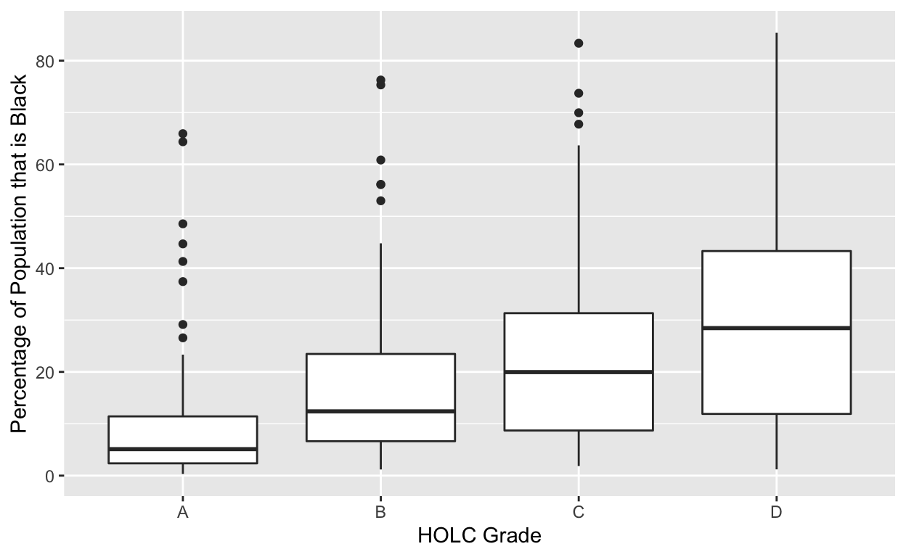

My final project
I am interested in exploring data related to voting patterns and policing. I think it would be interesting to look at election results in states with a lot of gerrymandering and see if there are any patterns/relationships that can be found in terms of which parties historically win wide. Another thing I’d be interested in exploring is patterns of the school to prison pipeline in schools that are over-policed, and whether or not there is evidence of racial discrimination here as well.
Does the history of redlining in the 1930s in metropolitan areas have an impact on the racial composition of those same areas today (2020)? In this study I plan to examine to what extent HOLC grades during the redlining era have a legacy in terms of the racial composition of specific areas today. I hypothesize that there is a relationship between whether a metropolitan area had been redlined and their current racial composition. I expect that areas with higher HOLC grades during the redlining era will have a higher concentration of white people now, and that areas with lower HOLC grades will have a higher concentration of Black people now. The history of redlining is that homeowners associations would give certain neighborhoods rankings — A’s were most frequently given to affluent white neighborhoods, and D’s were most often assigned to neighborhoods with more Black people. These rankings had a large impact on housing prices and consequently many “better” neighborhoods were not accessible to Black families who were just beginning to have the ability to purchase their own house etc. I expect that the inability to break into these “better” neighborhoods with better resources and schools etc, contributed to the lack of upward mobility for Black families which confined them to the same areas/neighborhoods over time. My explanatory variable of interest would be the HOLC grade assigned to the measured metropolitan area during the period of 1935-1940. HOLC grades are on a A-D grading scale, with A’s being areas of better quality and D’s being areas of lesser quality. In my data set, each recorded metropolitan area has its corresponding HOLC grade. For example, one metropolitan area in Asheville, NC has an A but another area also in Asheville, NC has a D so I can tell that these neighboring areas in the same town were redlined. My outcome variables of interest would be the white population and Black population for those same metropolitan areas in 2020. Both variables are estimates of non-Hispanic white/Black populations within HOLC zones with a given holc_grade in a given metro_area and they are rounded to the nearest integer. My hypothesis would be supported by a pattern that showed higher 2020 white populations (and lower Black populations) in areas with higher HOLC grades (A’s and B’s), and higher 2020 Black populations (and lower white populations) in areas with lower HOLC grades (C’s and D’s). Conversely, my hypothesis would be disproved if the data showed lower 2020 white populations in areas with higher HOLC grades, and higher 2020 Black populations in areas with lower HOLC grades. It could also be that when comparing white vs. Black populations for higher HOLC grade areas or lower HOLC grade areas, we see that there is a 50-50 split, indicating that there is equal racial composition in those areas now.
library(tidyverse)
redlining <- read_csv("data-master/redlining/metro-grades.csv")
white_holc_plot <- redlining |>
ggplot(aes(x = holc_grade,
y = pct_white)) +
geom_boxplot() +
labs(x = "HOLC Grade",
y = "Percentage of Population that is White")
white_holc_plotblack_holc_plot <- redlining |>
ggplot(aes(x = holc_grade,
y = pct_black)) +
geom_boxplot() +
labs(x = "HOLC Grade",
y = "Percentage of Population that is Black")
black_holc_plot